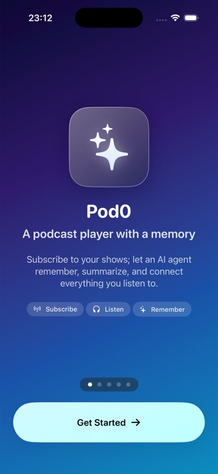

Current release gate for this scenario.
Pod0 Validation
FND-001 - Onboarding page 1 appears and no main-tab state is reachable behind it
Foundation And First Run - blocked
Scenario Identity And Links
- Scenario
- FND-001
- Title
- Onboarding page 1 appears and no main-tab state is reachable behind it
- Category
- Foundation And First Run
- Tags
- catalog-scaffold, d1, d5, fnd, foundation-and-first-run, performance-required, visual-evidence-required
- Source
- /Users/customer/Work/podcast-player-gh-pages-source/docs/testing/scenarios/catalog/01-foundation-identity-discovery-library.md:7
- Canonical URL
- /podcast-player/scenarios/fnd-001/
- Previous
- Next
- ../fnd-002/
- Data
- data.json
Product Intent And Acceptance Criteria
- Persona
- A new or returning podcast listener completing a core Pod0 job on iPhone.
- Job
- Complete FND-001 with confidence: onboarding page 1 appears and no main-tab state is reachable behind it.
- User value
- The flow should make foundation and first run feel reliable, understandable, and native to Pod0 rather than a test-only path.
- Cluster
- Foundation And First Run (foundation-and-first-run)
- Related scenarios
- FND-002, FND-003, FND-004, FND-005, FND-006, FND-007, FND-008, FND-009
Acceptance Criteria
- Given a fresh install with no app group data
- When Pod0 launches
- Then onboarding page 1 appears and no main-tab state is reachable behind it
- Architecture boundary remains within D1, D5.
Platform Expectations
- iPhone-first flow uses system navigation/chrome, safe areas, SF typography, semantic color, 44 pt tap targets, and reachable primary controls.
- Accessibility evidence covers VoiceOver, Dynamic Type, contrast, motion/transparency settings, and touch target behavior before UI scores can pass.
- Provider, relay, transcript, audio, or LLM dependencies are deterministic through fixtures/cassettes or explicitly marked live-only.
- State, navigation, queue, playback, and generated report pages are checked across device, viewport, and resume contexts.
Launch Readiness Summary
Highest scenario risk or linked defect severity.
Whether evidence can support product judgment.
Assistive-settings coverage status.
Adjacent-flow rerun coverage status.
Provider, relay, fixture, or cassette state.
- Owner
- validation-agent
- Scenario status
- blocked
- Blocking gates
- product_coherence, release_readiness
- Missing evidence
- metric_trace, accessibility_audit
- Issue links
- #743 (closed by #745)
Post-fix evidence shows first-run onboarding is visible and no known main-shell controls are exposed behind it. The scenario is still blocked for launch readiness because required metric_trace and accessibility_audit evidence are missing.
Foundation And First Run cluster coherence remains incomplete until adjacent scenarios are judged together; FND-001 now contributes closed-defect evidence and remaining evidence gaps to that group view.
Fix Revalidation Status
Structural onboarding gate: main shell is not mounted until onboarding is complete.
Focused XCTest passed on iPhone 17 Pro / iOS 26.2.
All required checks passed; PR #745 merged at 2026-07-08T02:23:17Z.
FND-001 has a merged post-fix revalidation pass for issue #743: onboarding is visible and the known hidden main-shell controls are absent from the XCTest accessibility automation tree. Full launch-readiness remains blocked only by missing metric_trace, accessibility_audit, and adjacent Foundation-flow coverage.
{kind=link}
| Artifact | Status | Path | Summary |
|---|---|---|---|
| fnd001-onboarding-isolated-screenshot | pass | 20260708T012100Z-onboarding-isolated.jpg | Visible onboarding screen captured after clean reinstall/relaunch. |
| fnd001-onboarding-isolation-xctest | pass | 20260708T011605Z-onboarding-isolation-xctest.json | Focused XCTest asserted Get Started exists and Open sidebar, Settings, Search, Open Agent, Add Show, Browse categories, Conversations, Home, Library, Your shows live here, tab-home, tab-library, home-search-button, and agent.open are absent. |
Next-Wave Execution Manifest
FND-001
- Priority
- 1
- Scenario
- FND-001
- Runbook
- Erase simulator/app-group data, launch Pod0, and stop on the first onboarding page before tapping any primary action.
- Execution status
- blocked
| Id | Step Id | Description | Must Include | Must Not Include |
|---|---|---|---|---|
| fnd001-first-page | step-02-action | First onboarding page immediately after cold launch. | primary headline, primary action, safe-area top and bottom chrome | main tab bar, library rows, mini-player, account details |
| fnd001-ui-tree-gate | step-03-result | Semantic UI tree proving no main-tab controls are reachable behind onboarding. | onboarding controls with labels, primary button role | Home tab, Library tab, Bookmarks tab, Clippings tab |
| Id | Name | Budget | Method | Required |
|---|---|---|---|---|
| fnd001-cold-launch-first-onboarding-frame-ms | Cold launch to first onboarding frame | <= 1500 ms | XCTest launch metric or xcodebuild timestamp from process launch to first captured onboarding UI tree. | yes |
| Id | Area | Check | Skill Refs |
|---|---|---|---|
| fnd001-first-run-gate | ux | Onboarding behaves as a true first-run gate with no navigable app state behind it. | vabole/apple-skills@hig, qodex-ai/ai-agent-skills@mobile-app-interface |
| fnd001-chrome-restraint | liquid_glass | Any glass-like treatment is limited to chrome or controls and preserves contrast over the launch backdrop. | vabole/apple-skills@ios-liquid-glass |
| Id | Severity | File Issue If | Affected Dimensions |
|---|---|---|---|
| fnd001-main-state-bypass | blocker | Any main-tab, library, player, account, or seeded app state is reachable before onboarding completion. | flow, privacy_security, navigation_state_restoration |
| fnd001-launch-blank-or-loop | major | Cold launch shows a blank screen, spinner loop, clipped CTA, or inaccessible first action for more than the budget. | performance, ui_polish, accessibility_dynamic_type |
What Was Attempted And Test Intent
- Intent
- Executed FND-001 on an erased dedicated iPhone 17 simulator, captured the original failed first-run evidence, then revalidated the structural onboarding fix with focused XCTest and screenshot proof.
- Acceptance target
- onboarding page 1 appears and no main-tab state is reachable behind it
- Attempt status
- pass_with_issues
- Attempt count
- 3
- Branch count
- 2
- Evidence confidence
- pass_with_issues
Flow Overview And Steps
- Given
- a fresh install with no app group data
- When
- Pod0 launches
- Then
- onboarding page 1 appears and no main-tab state is reachable behind it
| Step | Phase | Action | Expected | Status | Evidence Needed |
|---|---|---|---|---|---|
| step-01-preconditions | Preconditions | Prepare a fresh install with no app group data | Fixture, device, provider, account, cassette, and network state match the scenario setup. | not_run | source_doc, command_output |
| step-02-action | Primary Action | Execute Pod0 launches | The user-visible route follows the intended path without hidden state mutation. | not_run | screenshot, ui_tree, log |
| step-03-result | Expected Result | Observe that onboarding page 1 appears and no main-tab state is reachable behind it | Observed UI, logs, metrics, and state projections agree with the expected behavior. | not_run | accessibility_audit, command_output, log, metric_trace, screenshot, source_doc, ui_tree |
| step-04-exit | Exit State | Leave the flow through the natural product path | Adjacent screens, back stack, mini-player, account, transcript, agent, or library state remain coherent. | not_run | screenshot, ui_tree |
Data And Control-Plane Setup
- Seed state / fixtures
- fresh erased simulator, no --UITestSeed launch argument
- Provider mode
- none
- Live dependency rationale
- FND-001 used no provider, relay, STT, TTS, or LLM dependency.
- Locale
- simulator default
- Appearance
- light
- Network
- local simulator default
- Launch arguments
- none
Declared setup dependencies: erased sim. Provider mode is none until validation attaches fixtures or cassettes.
Preconditions, Fixtures, Cassettes, And Runtime Metadata
- Source
- /Users/customer/Work/podcast-player-gh-pages-source/docs/testing/scenarios/catalog/01-foundation-identity-discovery-library.md:7
- Generated
- 2026-07-08T00:55:02Z
- Commit
- 7098b7d9ec69
- Branch
- codex/fnd-wave001-evidence
- Provider mode
- none
- Generator
- scenario-report-generator/0.4.0
| Name | OS | Form Factor | UDID |
|---|---|---|---|
| Pod0 FND Wave001 Codex | iOS 26.2 | iphone | 4C35CC31-67B0-411F-B4DA-A571CF307DFE |
No cassettes declared for this scaffold.
Execution Attempts, Retries, And Branches
Issue #743 is fixed and revalidated; complete the remaining full-scenario rerun from an erased simulator with cold-launch metric, accessibility audit, screenshot, UI tree, and logs.
| Attempt | Status | Executor | Tools | Commands | Notes |
|---|---|---|---|---|---|
| attempt-001 | blocked | Codex via XcodeBuildMCP | mcp__xcode.build_run_sim | build_run_sim extraArgs=-skipPackagePluginValidation launchArgs=[] | Initial build failed because Derived/Sources/TuistAssets+Podcastr.swift and TuistBundle+Podcastr.swift were missing in the fresh worktree. |
| attempt-002 | fail | Codex via XcodeBuildMCP | mcp__xcode.build_run_sim, mcp__xcode.wait_for_ui, mcp__xcode.snapshot_ui, mcp__xcode.screenshot, mcp__xcode.tap | tuist generate --no-open; cargo build --target aarch64-apple-ios-sim -p nmp-app-podcast; build_run_sim extraArgs=-skipPackagePluginValidation launchArgs=[] | The second build/run hit the MCP 300s timeout, but the app installed and launched. Screenshot showed onboarding; UI tree exposed hidden main-shell controls behind onboarding. Hidden Settings tap probe returned SUCCEEDED but did not navigate. |
| attempt-003-fix-revalidation | pass | Codex via XcodeBuildMCP | mcp__xcode.build_run_sim, mcp__xcode.test_sim, mcp__xcode.screenshot | cargo build -p nmp-app-podcast --lib --target aarch64-apple-ios-sim; build_run_sim extraArgs=-skipPackagePluginValidation launchArgs=--UITestSeed --UITestSeedOnboardingRequired; focused OnboardingIsolationUITests; P1SettingsUITests onboarding-not-shown-again | Focused post-fix revalidation passed locally and all required GitHub checks passed before PR #745 merged. |
Branches
- fresh-install-first-page: Erase dedicated simulator and launch without --UITestSeed. -> First onboarding page appears before primary action. (pass)
- main-shell-hidden-from-ui-tree: Capture semantic UI tree on first onboarding page. -> No main-shell controls are exposed behind onboarding after PR #745. (pass)
Results And Verdict
FND-001 is post-fix blocked, not defect-failed: the known hidden main-shell controls are absent after PR #745, but required launch/accessibility evidence is still missing.
- Overall
- blocked
- Gate explanation
- The #743 semantic gate defect is fixed and revalidated by focused XCTest/screenshot evidence; launch readiness remains blocked by missing metric_trace, accessibility_audit, and cluster revalidation evidence.
Screenshot Evidence
{kind=link}

Evidence Inventory
Fresh-install screenshots, UI tree, and logs contain no private account, key, provider token, feed, transcript, or audio material.
Required evidence kinds: source_doc, screenshot, ui_tree, log, metric_trace, accessibility_audit
| Kind | Reason | Blocked Dimensions |
|---|---|---|
| metric_trace | Cold launch to first onboarding frame is not measured. | performance |
| accessibility_audit | VoiceOver, Dynamic Type, contrast, Reduce Motion, and Reduce Transparency were not audited. | accessibility_dynamic_type, touch_ergonomics, liquid_glass_ios_primitives |
Missing required metric trace evidence is blocking this report area.
Blocks: performance
Missing required accessibility audit evidence is blocking this report area.
Blocks: accessibility_dynamic_type, touch_ergonomics, liquid_glass_ios_primitives
| ID | Type | Path | Description |
|---|---|---|---|
| catalog:fnd-001 | source_doc | sources/catalog/01-foundation-identity-discovery-library.md | Catalog source row for FND-001 at line 7. |
| rubric:review-skill-grounding | source_doc | data/skill-grounding.json | Required review skills and skill-search terms for scenario critique. |
| fnd001-first-onboarding-screenshot | screenshot | assets/scenarios/fnd-001-first-run-gate/20260707T231200Z-first-onboarding.jpg | Fresh-install first onboarding page before tapping any visible primary action. |
| fnd001-ui-tree | ui_tree | assets/scenarios/fnd-001-first-run-gate/20260707T231200Z-ui-tree-excerpt.json | XcodeBuildMCP semantic UI-tree excerpt showing onboarding controls plus hidden main-shell targets. |
| fnd001-build-run-tail | log | assets/scenarios/fnd-001-first-run-gate/20260707T230655Z-build-run-tail.log | Tail of the XcodeBuildMCP build/run log proving the retry build succeeded after Tuist and Rust prerequisites. |
| fnd001-launch-console-log | log | assets/scenarios/fnd-001-first-run-gate/20260707T230958Z-launch-console.log | XcodeBuildMCP launch console log for io.f7z.podcast on the dedicated simulator. |
| fnd001-runtime-oslog | log | assets/scenarios/fnd-001-first-run-gate/20260707T231156Z-runtime-oslog.log | Runtime OSLog stream captured by XcodeBuildMCP for the fresh-install run. |
Quality Review
| Area | Status | Summary | Checks | Gaps |
|---|---|---|---|---|
| ui | incomplete | Layout, spacing, typography, visual hierarchy, semantic color, SF Symbols, screenshots, and platform-native finish. Current scaffold has no run evidence for FND-001. | SF/system typography, semantic color, visual hierarchy, no overlapping text, platform-native controls | Attach ui evidence before scoring this area above 2. |
| ux | incomplete | Task clarity, user effort, feedback, interruption recovery, cognitive load, and route predictability. Current scaffold has no run evidence for FND-001. | clear user goal, low cognitive load, visible feedback, recoverable errors, predictable navigation | Attach ux evidence before scoring this area above 2. |
| performance | incomplete | Launch, interaction latency, screen-settle time, scroll hitches, memory, CPU, audio, network, and provider latency. Current scaffold has no run evidence for FND-001. | launch latency, tap latency, screen settle, scroll hitches, provider/audio/network latency | Attach performance evidence before scoring this area above 2. |
| accessibility | incomplete | VoiceOver, Dynamic Type, contrast, Reduce Motion, Reduce Transparency, 44 pt targets, captions, and assistive navigation. Current scaffold has no run evidence for FND-001. | VoiceOver labels, Dynamic Type, 4.5:1 contrast, 44 pt targets, Reduce Motion/Transparency | Attach accessibility evidence before scoring this area above 2. |
| reliability | incomplete | Rerun count, flake history, retry behavior, stale evidence, timeout behavior, and deterministic replay. Current scaffold has no run evidence for FND-001. | rerun count, retry cause, flake history, fresh build, deterministic replay | Attach reliability evidence before scoring this area above 2. |
| privacy_security | incomplete | Secrets, private keys, permissions, logs, analytics, relay visibility, cassette redaction, and export safety. Current scaffold has no run evidence for FND-001. | no secrets in screenshots/logs, permission clarity, redaction hashes, private Nostr material safe | Attach privacy security evidence before scoring this area above 2. |
| content_localization | incomplete | Podcast metadata, transcript/agent copy, truncation, empty copy, locale/date/number behavior, and translation safety. Current scaffold has no run evidence for FND-001. | copy clarity, long text, dates/numbers/locale, empty/error copy, transcript readability | Attach content localization evidence before scoring this area above 2. |
| controls_gestures | incomplete | Buttons, menus, sheets, gestures, audio route controls, haptics, keyboard alternatives, and touch reach. Current scaffold has no run evidence for FND-001. | touch reach, gesture alternative, audio controls, haptic expectation, sheet/menu behavior | Attach controls gestures evidence before scoring this area above 2. |
| offline_resume | incomplete | Offline state, app relaunch, background playback, interrupted provider calls, downloads, and resume from stale state. Current scaffold has no run evidence for FND-001. | offline messaging, resume after relaunch, background playback, download availability, cancel/retry | Attach offline resume evidence before scoring this area above 2. |
| observability | incomplete | Structured logs, metric IDs, provider/request IDs, relay IDs, redacted traces, and issue reproduction context. Current scaffold has no run evidence for FND-001. | metric IDs, request IDs, relay IDs, redacted traces, issue reproduction context | Attach observability evidence before scoring this area above 2. |
UI Polish Report
- Status
- incomplete
- Score
- 3
- Summary
- The visible first page is well composed in light mode: centered icon, clear headline, readable copy, restrained feature chips, progress dots, and a bottom Get Started control above the home indicator.
- Evidence refs
- fnd001-first-onboarding-screenshot
Checks
- SF/system typography
- semantic color
- visual hierarchy
- no overlapping text
- platform-native controls
Gaps
- Attach ui evidence before scoring this area above 2.
UX Polish Report
- Status
- pass_with_issues
- Score
- 3
- Summary
- The first-run gate now behaves coherently for the known failure: onboarding is the only exposed app surface until setup is complete. Full accessibility settings and adjacent-flow coverage remain open.
- Evidence refs
- fnd001-onboarding-isolated-screenshot, fnd001-onboarding-isolation-xctest
Checks
- clear user goal
- low cognitive load
- visible feedback
- recoverable errors
- predictable navigation
Gaps
- Attach full accessibility and adjacent-flow evidence before promoting this area to pass.
Performance Metrics And Interaction Latency
| Metric | Value | Budget | Status | Method |
|---|---|---|---|---|
| First onboarding UI-tree node count | 112 nodes | Informational | pass | XcodeBuildMCP snapshot_ui |
| Cold launch to first onboarding frame | not captured | <= 1500 ms | blocked | Required launch timestamp was unavailable because build_run_sim timed out at 300s after the app had built/launched. |
Cold launch to first onboarding frame was not measured. The MCP build/run retry timed out at 300s even though the app later launched, so no defensible launch-to-first-frame metric is attached.
Required latency checks
- launch latency
- tap latency
- screen settle
- scroll hitches
- provider/audio/network latency
Animation, Transition, And Haptics Quality
Not assessed. Record transition, haptic, and Reduce Motion behavior when motion is part of the flow.
Not assessed. Review must check buttons, menus, sheets, gestures, audio route controls, haptics, keyboard alternatives, and one-handed reach.
Mobile interaction checks
- touch reach
- gesture alternative
- audio controls
- haptic expectation
- sheet/menu behavior
Product Flow Cohesiveness And Group Coherent-Product Judgment
- Cluster
- Foundation And First Run (foundation-and-first-run)
- Related scenarios
- FND-002, FND-003, FND-004, FND-005, FND-006, FND-007, FND-008, FND-009
- Individual judgment
- FND-001 has post-fix proof that onboarding no longer exposes the known main-shell controls behind first-run setup. Launch readiness remains blocked until the cold-launch metric, accessibility-settings audit, and adjacent Foundation flow checks are complete.
- Group judgment
- Foundation And First Run cluster coherence remains incomplete until adjacent scenarios are judged together; FND-001 now contributes closed-defect evidence and remaining evidence gaps to that group view.
Cross-Scenario Themes
- Does the flow preserve the same product mental model as adjacent scenarios?
- Do UI, UX, accessibility, performance, and NMP architecture scores tell the same story?
- Do related pages expose shared defects or readiness blockers instead of isolated one-off notes?
Cross-Scenario Risks
- Changes to FND-001 may affect FND-002, FND-003, FND-004, FND-005 and must be revalidated as a cluster.
Product-Level Assessment
- Product-level status
- blocked
- Individual coherence
- blocked
- Cluster coherence
- incomplete
- Validation confidence
- pass_with_issues
- Highest risk severity
- major
- Release decision
- blocked until metric, accessibility, and adjacent-scenario evidence support the grouped assessment
| Dimension | Score | Status | Rationale |
|---|---|---|---|
| functional_correctness | 0 | incomplete | The group contains unassessed dimensions without full current run evidence; product experience additionally requires cluster-level coherence judgments. |
| evidence_reproducibility | 0 | incomplete | The group contains unassessed dimensions without full current run evidence; product experience additionally requires cluster-level coherence judgments. |
| product_experience | 0 | incomplete | The group contains unassessed dimensions without full current run evidence; product experience additionally requires cluster-level coherence judgments. |
| engineering_quality | 0 | incomplete | The group contains unassessed dimensions without full current run evidence; product experience additionally requires cluster-level coherence judgments. |
| follow_through | 0 | incomplete | The group contains unassessed dimensions without full current run evidence; product experience additionally requires cluster-level coherence judgments. |
Product cohesion themes
- Does the flow preserve the same product mental model as adjacent scenarios?
- Do UI, UX, accessibility, performance, and NMP architecture scores tell the same story?
- Do related pages expose shared defects or readiness blockers instead of isolated one-off notes?
Readiness Gates
Ship gate: blocked
- Issue #743 is fixed and revalidated by focused screenshot/XCTest evidence, but the full scenario rerun is not complete.
- Remaining missing evidence: metric_trace, accessibility_audit.
- Related scenario cluster coherence remains incomplete until adjacent pages are reviewed together.
| Gate | Status | Requirement | Owner |
|---|---|---|---|
| required_evidence | pass_with_issues | Screenshots/UI trees/logs/cassettes/metrics required by the scenario are attached and redacted. | validation-agent |
| skill_grounding | pass | UI, UX, accessibility, performance, and product judgments cite the loaded review skills or local doctrine. | validation-agent |
| score_integrity | pass_with_issues | Every dimension and group score follows the evidence gates and matches the final verdict. | validation-agent |
| product_coherence | incomplete | Individual scenario judgment and related-scenario group judgment are both present. | validation-agent |
| defect_tracking | pass | Every actionable defect has severity, owner, GitHub issue link, and fix/revalidation state. | validation-agent |
| release_readiness | blocked | No blocker or major unresolved risk remains without an explicit owner and acceptance rationale. | validation-agent |
Instrumentation Gaps And Missing Evidence
| Gap | Severity | Summary | Affected Dimensions | Owner |
|---|---|---|---|---|
| fnd001-cold-launch-metric-missing | major | No defensible launch-to-first-frame metric was captured due to MCP build_run_sim timeout. | performance, observability | validation-agent |
| fnd001-accessibility-settings-audit-missing | major | VoiceOver traversal, Dynamic Type, dark mode, Reduce Motion, and Reduce Transparency were not fully audited. | accessibility_dynamic_type, liquid_glass_ios_primitives, touch_ergonomics | validation-agent |
Risk Severity And Validation Confidence
- Highest risk severity
- major
- Open risk count
- 3
- Missing evidence
- metric_trace, accessibility_audit
- Readiness
- blocked
- Evidence confidence
- Evidence confidence is zero until a current build, device/OS, rerun count, freshness, and flake notes are attached.
| Gap | Severity | Summary | Affected Dimensions | Owner |
|---|---|---|---|---|
| fnd001-cold-launch-metric-missing | major | No defensible launch-to-first-frame metric was captured due to MCP build_run_sim timeout. | performance, observability | validation-agent |
| fnd001-accessibility-settings-audit-missing | major | VoiceOver traversal, Dynamic Type, dark mode, Reduce Motion, and Reduce Transparency were not fully audited. | accessibility_dynamic_type, liquid_glass_ios_primitives, touch_ergonomics | validation-agent |
Risks, Defects, Issue Links, And Follow-Up
| ID | Severity | Priority | Risk | Dimensions | Mitigation |
|---|---|---|---|---|---|
| risk-missing-evidence | major | p0 | Scenario could be misread as fully launch-ready without metric/accessibility evidence. | artifacts, evidence_confidence, verdict | Keep verdict blocked until metric_trace, accessibility_audit, and cluster checks are attached. |
| risk-cluster-regression | major | p1 | Fixes for this flow may regress related scenarios: FND-002, FND-003, FND-004, FND-005. | product_cluster_coherence, regression_risk | Revalidate the scenario cluster before promoting group coherence. |
| risk-performance-budget | major | p1 | Performance budget is declared but unmeasured. | performance | Attach metric trace with budget, value, unit, method, and status. |
| Issue | Severity | Title | Status |
|---|---|---|---|
| #743 | major | FND-001: first onboarding page exposes hidden main-shell controls in UI tree | closed |
- Hide or unmount main-shell accessibility/hit-test targets while onboarding is presented. Fixed by PR #745.
closed - app-team - Complete full FND-001 rerun with screenshot, UI tree, logs, cold-launch metric, accessibility audit, and adjacent Foundation flow spot checks.
open - validation-agent
Grouped Scores And Coherent Product Judgment
| Dimension | Score | Status | Rationale |
|---|---|---|---|
| functional_correctness | 0 | incomplete | The group contains unassessed dimensions without current run evidence; product experience additionally requires individual and cluster-level coherence judgments. |
| evidence_reproducibility | 0 | incomplete | The group contains unassessed dimensions without current run evidence; product experience additionally requires individual and cluster-level coherence judgments. |
| product_experience | 0 | incomplete | The group contains unassessed dimensions without current run evidence; product experience additionally requires individual and cluster-level coherence judgments. |
| engineering_quality | 0 | incomplete | The group contains unassessed dimensions without current run evidence; product experience additionally requires individual and cluster-level coherence judgments. |
| follow_through | 0 | incomplete | The group contains unassessed dimensions without current run evidence; product experience additionally requires individual and cluster-level coherence judgments. |
Individual Dimension Judgments
| Dimension | Score | Status | Rationale |
|---|---|---|---|
| persona_acceptance | 0 | incomplete | Persona, Job, And Acceptance Criteria has not been validated with current run evidence. |
| flow | 0 | incomplete | Flow has not been validated with current run evidence. |
| attempted_test | 0 | incomplete | Attempted Test has not been validated with current run evidence. |
| scenario_setup | 0 | incomplete | Scenario Setup has not been validated with current run evidence. |
| execution_attempts | 0 | incomplete | Execution Attempts, Retries, And Branches has not been validated with current run evidence. |
| expected_behavior | 0 | incomplete | Expected Behavior has not been validated with current run evidence. |
| actual_result | 3 | pass_with_issues | Post-fix focused revalidation proves the first onboarding page is visible and the known main-shell controls are absent from XCTest accessibility automation. Full launch metric and accessibility-settings evidence are still missing. |
| artifacts | 3 | pass_with_issues | Screenshot, UI tree, build/log references are attached; launch metric and full accessibility audit are missing. |
| evidence_provenance | 0 | incomplete | Evidence Provenance has not been validated with current run evidence. |
| review_skill_grounding | 0 | incomplete | Review Skill Grounding has not been validated with current run evidence. |
| ui_polish | 3 | pass_with_issues | Visible first page remains visually coherent, and the post-fix screenshot shows no exposed main-shell chrome. Dark mode, Reduce Transparency, and larger accessibility sizes still need audit coverage. |
| ux_polish | 3 | pass_with_issues | The structural onboarding gate now prevents the known underlying app actions from being exposed before onboarding completion. Full first-run rerun and cluster checks remain open. |
| performance | 0 | blocked | The required cold-launch metric was not captured because the MCP build/run call timed out at 300s. |
| accessibility_dynamic_type | 2 | pass_with_issues | Focused XCTest proves the known hidden controls are absent after the fix. VoiceOver traversal, Dynamic Type, contrast, Reduce Motion, and Reduce Transparency still need a complete audit. |
| liquid_glass_ios_primitives | 2 | pass_with_issues | Visible glass-like chrome is restrained and readable in light mode; Reduce Transparency and dark mode were not audited. |
| error_recovery | 0 | incomplete | Error And Recovery Behavior has not been validated with current run evidence. |
| privacy_security | 0 | incomplete | Privacy And Security has not been validated with current run evidence. |
| nmp_architecture | 0 | incomplete | NMP Architecture And Cohesiveness has not been validated with current run evidence. |
| product_coherence | 0 | incomplete | Product Coherence In Context has not been validated with current run evidence. |
| product_cluster_coherence | 0 | incomplete | Product Cluster Coherence has not been validated with current run evidence. |
| before_after_deltas | 0 | incomplete | Before/After Deltas has not been validated with current run evidence. |
| reliability_flakiness | 0 | incomplete | Reliability And Flakiness has not been validated with current run evidence. |
| regression_risk | 0 | incomplete | Regression Risk has not been validated with current run evidence. |
| defects_issues_filed | 4 | pass | The actionable FND-001 defect is filed as #743 with evidence paths. |
| revalidation_status | 4 | pass | PR #745 merged after all required GitHub checks passed; issue #743 closed with focused screenshot and XCTest evidence attached to this page. |
| risks_follow_up | 0 | incomplete | Risks, Follow-Up, And Back-Links has not been validated with current run evidence. |
| instrumentation_gaps | 0 | incomplete | Instrumentation Gaps And Missing Evidence has not been validated with current run evidence. |
| localization_content_quality | 0 | incomplete | Localization And Content Quality has not been validated with current run evidence. |
| controls_gestures_audio | 0 | incomplete | Controls, Gestures, Audio, And Haptics has not been validated with current run evidence. |
| offline_resume_behavior | 0 | incomplete | Offline, Interruption, And Resume Behavior has not been validated with current run evidence. |
| readiness_gates | 0 | incomplete | Readiness Gates has not been validated with current run evidence. |
| verdict | 3 | blocked | The specific semantic gate defect is fixed and revalidated, but the scenario remains blocked by missing metric/accessibility evidence and cluster coherence work. |
| next_actions | 0 | incomplete | Next Actions has not been validated with current run evidence. |
| owner_status | 0 | incomplete | Owner And Status has not been validated with current run evidence. |
| data_integrity_state_sync | 0 | incomplete | Data Integrity And State Sync has not been validated with current run evidence. |
| navigation_state_restoration | 0 | incomplete | Navigation State And Restoration has not been validated with current run evidence. |
| device_viewport_coverage | 0 | incomplete | Device, Viewport, And Generated-Page Coverage has not been validated with current run evidence. |
| media_session_background_continuity | 0 | incomplete | Media Session And Background Audio Continuity has not been validated with current run evidence. |
| cross_screen_continuity | 0 | incomplete | Cross-Screen Continuity has not been validated with current run evidence. |
| states_resilience | 0 | incomplete | Empty, Loading, Offline, And Recovery States has not been validated with current run evidence. |
| touch_ergonomics | 0 | incomplete | Touch Ergonomics has not been validated with current run evidence. |
| motion_haptics | 0 | incomplete | Motion And Haptics has not been validated with current run evidence. |
| information_architecture | 0 | incomplete | Information Architecture has not been validated with current run evidence. |
| content_hierarchy | 0 | incomplete | Content Hierarchy has not been validated with current run evidence. |
| observability | 0 | incomplete | Observability has not been validated with current run evidence. |
| analytics_privacy_boundaries | 0 | incomplete | Analytics And Privacy Boundaries has not been validated with current run evidence. |
| replayability_cassette_provenance | 0 | incomplete | Replayability And Cassette Provenance has not been validated with current run evidence. |
| evidence_confidence | 3 | pass_with_issues | Artifacts are current and tied to source commit/device/tooling; timing evidence remains blocked. |
| device_os_matrix | 0 | incomplete | Device And OS Matrix has not been validated with current run evidence. |
| sister_app_nmp_chirp_comparison | 0 | incomplete | Sister App, NMP, And Chirp Comparison has not been validated with current run evidence. |
Required Detailed Sections
Persona, Job, And Acceptance Criteria
Persona: A new or returning podcast listener completing a core Pod0 job on iPhone. Acceptance criteria are the scenario Given/When/Then plus the declared architecture boundary D1,D5.
Evidence refs: catalog:fnd-001
Flow
Catalog flow for Foundation And First Run: Given a fresh install with no app group data, when Pod0 launches, then onboarding page 1 appears and no main-tab state is reachable behind it.
Evidence refs: catalog:fnd-001
Attempted Test
Executed FND-001 on an erased dedicated iPhone 17 simulator, captured the original failed first-run evidence, then revalidated the structural onboarding fix with focused XCTest and screenshot proof.
Evidence refs: fnd001-first-onboarding-screenshot, fnd001-ui-tree, fnd001-build-run-tail, fnd001-launch-console-log, fnd001-onboarding-isolated-screenshot, fnd001-onboarding-isolation-xctest
Scenario Setup
Declared setup dependencies: erased sim. Provider mode is none until validation attaches fixtures or cassettes.
Evidence refs: catalog:fnd-001
Execution Attempts, Retries, And Branches
Three attempts are recorded: the initial build-shape failure, the original FND-001 semantic failure, and the post-fix focused revalidation that passed before PR #745 merged.
Evidence refs: fnd001-build-run-tail, fnd001-first-onboarding-screenshot, fnd001-ui-tree, fnd001-onboarding-isolated-screenshot, fnd001-onboarding-isolation-xctest
Expected Behavior
Expected behavior from BDD: onboarding page 1 appears and no main-tab state is reachable behind it. NMP/RMP boundary declared by the catalog: D1,D5.
Evidence refs: catalog:fnd-001
Actual Result
Post-fix focused revalidation shows the visible first onboarding page and no known main-shell controls exposed behind it in XCTest accessibility automation.
Evidence refs: fnd001-onboarding-isolated-screenshot, fnd001-onboarding-isolation-xctest
- PR #745 merged and closed https://github.com/pablof7z/podcast-player/issues/743.
Artifacts, Screenshots, Video
Attached a current screenshot, semantic UI-tree excerpt, build/run log tail, launch console log, and runtime OSLog.
Evidence refs: fnd001-first-onboarding-screenshot, fnd001-ui-tree, fnd001-build-run-tail, fnd001-launch-console-log, fnd001-runtime-oslog
Evidence Provenance
6 non-catalog artifact(s) are attached with their published IDs, paths, redaction metadata, and run context.
Evidence refs: fnd001-build-run-tail, fnd001-first-onboarding-screenshot, fnd001-launch-console-log, fnd001-runtime-oslog, fnd001-ui-tree, rubric:review-skill-grounding
- metric_trace
- accessibility_audit
Review Skill Grounding
This review used the requested skills search and grounded critique in vabole/apple-skills@ios-liquid-glass, vabole/apple-skills@hig, and qodex-ai/ai-agent-skills@mobile-app-interface.
Evidence refs: fnd001-ui-tree
- npx skills search "iOS mobile UI UX liquid glass native polish validation" returned ios-liquid-glass and mobile-app-interface among the selected results.
- Applied Liquid Glass guidance: glass belongs on controls/chrome, not dense hidden content; accessibility settings must remain legible.
- Applied HIG/mobile guidance: safe areas, Dynamic Type, 44x44 pt controls, semantic labels, and onboarding should be brief and not expose contradictory app state.
UI Polish Report
The visible first page is well composed in light mode: centered icon, clear headline, readable copy, restrained feature chips, progress dots, and a bottom Get Started control above the home indicator.
Evidence refs: fnd001-first-onboarding-screenshot
UX Polish Report
The first-run gate now behaves coherently for the known failure: onboarding is the only exposed app surface until setup is complete. Full accessibility settings and adjacent-flow coverage remain open.
Evidence refs: fnd001-onboarding-isolated-screenshot, fnd001-onboarding-isolation-xctest
Performance Metrics
Cold launch to first onboarding frame was not measured. The MCP build/run retry timed out at 300s even though the app later launched, so no defensible launch-to-first-frame metric is attached.
Evidence refs: fnd001-build-run-tail, fnd001-launch-console-log
Accessibility And Dynamic Type
Focused XCTest proves the known hidden main-shell controls are absent after the fix. Dynamic Type, VoiceOver traversal, contrast, Reduce Motion, and Reduce Transparency still require a full audit.
Evidence refs: fnd001-onboarding-isolated-screenshot, fnd001-onboarding-isolation-xctest
Liquid Glass And iOS Primitives
Visible glass-like treatment is restrained to the app icon/feature chips/CTA chrome and preserves contrast in light mode. Post-fix proof shows no main-shell chrome exposed behind onboarding; Reduce Transparency and dark mode still need audit coverage.
Evidence refs: fnd001-first-onboarding-screenshot, fnd001-onboarding-isolated-screenshot, fnd001-onboarding-isolation-xctest
Error And Recovery Behavior
Not assessed. Error, offline, retry, cancellation, and recovery paths must be captured where the scenario can fail.
Evidence refs: catalog:fnd-001
Privacy And Security
Not assessed. Validation must scan screenshots, logs, cassettes, relays, and exports for leaked keys, tokens, private audio, or private Nostr material.
Evidence refs: catalog:fnd-001
NMP Architecture And Cohesiveness
Not assessed. Declared NMP/RMP boundary: D1,D5. Review must check Rust-owned state/policy, thin native renderers, bounded FFI, replay clocks, and privacy fail-closed behavior.
Evidence refs: catalog:fnd-001, rubric:review-skill-grounding
Product Coherence In Context
FND-001 has post-fix proof that onboarding no longer exposes the known main-shell controls behind first-run setup. Launch readiness remains blocked until the cold-launch metric, accessibility-settings audit, and adjacent Foundation flow checks are complete.
Evidence refs: fnd001-build-run-tail, fnd001-first-onboarding-screenshot, fnd001-launch-console-log, fnd001-runtime-oslog, fnd001-ui-tree, rubric:review-skill-grounding, fnd001-onboarding-isolated-screenshot, fnd001-onboarding-isolation-xctest
- metric_trace
- accessibility_audit
Product Cluster Coherence
Foundation And First Run cluster coherence remains incomplete until adjacent scenarios are judged together; FND-001 now contributes closed-defect evidence and remaining evidence gaps to that group view.
Evidence refs: fnd001-build-run-tail, fnd001-first-onboarding-screenshot, fnd001-launch-console-log, fnd001-runtime-oslog, fnd001-ui-tree, rubric:review-skill-grounding, fnd001-onboarding-isolated-screenshot, fnd001-onboarding-isolation-xctest
- Review adjacent scenario pages as a cluster before promoting group coherence.
Before/After Deltas
Current evidence must be read as before/action/after deltas across the flow steps; any missing pair remains listed in instrumentation gaps.
Evidence refs: fnd001-build-run-tail, fnd001-first-onboarding-screenshot, fnd001-launch-console-log, fnd001-runtime-oslog, fnd001-ui-tree, rubric:review-skill-grounding
- metric_trace
- accessibility_audit
Reliability And Flakiness
Not assessed. Validation must record rerun count, retry causes, flake history, stale-build risk, timeout behavior, and deterministic replay coverage.
Evidence refs: catalog:fnd-001
Regression Risk
Not assessed. Validation must list adjacent scenarios and modules to rerun after any fix.
Evidence refs: catalog:fnd-001
Defects And Issues Filed
Filed #743 for the hidden main-shell semantic exposure behind onboarding; PR #745 fixed it and closed the issue after required GitHub checks passed.
Evidence refs: fnd001-ui-tree, fnd001-onboarding-isolated-screenshot, fnd001-onboarding-isolation-xctest
- https://github.com/pablof7z/podcast-player/issues/743
Revalidation Status
1 fixed issue and 0 open scenario defects are linked. Focused screenshot and XCTest proof show the known hidden main-shell controls are absent after the structural onboarding gate fix.
Evidence refs: fnd001-onboarding-isolated-screenshot, fnd001-onboarding-isolation-xctest
- #743 closed
- PR #745 merged
Risks, Follow-Up, And Back-Links
Current risks are scaffolded from missing evidence and cluster regression exposure. Actionable defects must gain issue/PR links and revalidation run IDs.
Evidence refs: catalog:fnd-001
Instrumentation Gaps And Missing Evidence
Screenshots, UI trees, logs, metrics, cassettes, and accessibility audits are listed as explicit missing evidence so gaps cannot be hidden in prose.
Evidence refs: catalog:fnd-001, rubric:review-skill-grounding
Localization And Content Quality
Not assessed. Review must check locale-sensitive strings, podcast metadata, transcript/agent content, truncation, empty/error copy, and translation safety.
Evidence refs: rubric:review-skill-grounding
Controls, Gestures, Audio, And Haptics
Not assessed. Review must check buttons, menus, sheets, gestures, audio route controls, haptics, keyboard alternatives, and one-handed reach.
Evidence refs: rubric:review-skill-grounding
Offline, Interruption, And Resume Behavior
Not assessed. Offline, interruption, relaunch, background playback, cancellation, retry, and resume behavior must be captured where applicable.
Evidence refs: catalog:fnd-001
Readiness Gates
Ship gate remains blocked by missing metric/accessibility evidence and cluster follow-up, not by the closed #743 semantic gate defect.
Evidence refs: fnd001-build-run-tail, fnd001-first-onboarding-screenshot, fnd001-launch-console-log, fnd001-runtime-oslog, fnd001-ui-tree, rubric:review-skill-grounding, fnd001-onboarding-isolated-screenshot, fnd001-onboarding-isolation-xctest
- Issue #743 is fixed and revalidated by focused screenshot/XCTest evidence, but the full scenario rerun is not complete.
- Remaining missing evidence: metric_trace, accessibility_audit.
- Related scenario cluster coherence remains incomplete until adjacent pages are reviewed together.
Verdict
The #743 semantic gate defect is fixed and revalidated. FND-001 remains blocked for launch readiness until metric_trace, accessibility_audit, and adjacent Foundation flow coverage are complete.
Evidence refs: fnd001-onboarding-isolated-screenshot, fnd001-onboarding-isolation-xctest
Next Actions
Run the scenario, attach evidence, score every dimension, file defects, and republish this page from validated JSON.
Evidence refs: catalog:fnd-001
Owner And Status
Readiness gates, instrumentation gaps, risks, issues, and next actions carry owner/status fields for follow-through.
Evidence refs: fnd001-build-run-tail, fnd001-first-onboarding-screenshot, fnd001-launch-console-log, fnd001-runtime-oslog, fnd001-ui-tree, rubric:review-skill-grounding, fnd001-onboarding-isolated-screenshot, fnd001-onboarding-isolation-xctest
- Issue #743 is fixed and revalidated by focused screenshot/XCTest evidence, but the full scenario rerun is not complete.
- Remaining missing evidence: metric_trace, accessibility_audit.
- Related scenario cluster coherence remains incomplete until adjacent pages are reviewed together.
Data Integrity And State Sync
Not assessed. Verify persisted state, Rust projections, Swift render state, queue/download/transcript/index data, and exported/imported records agree before and after the user-visible action.
Evidence refs: catalog:fnd-001
Navigation State And Restoration
Not assessed. Capture tab, sheet, detail path, back stack, deep-link, and relaunch restoration state so navigation success cannot hide stale or contradictory product state.
Evidence refs: catalog:fnd-001, rubric:review-skill-grounding
Device, Viewport, And Generated-Page Coverage
Not assessed. Record iPhone size class, Dynamic Type, orientation when relevant, and generated GitHub Pages desktop/mobile viewport checks for the published report page.
Evidence refs: rubric:review-skill-grounding
Media Session And Background Audio Continuity
Not assessed. For podcast-facing flows, verify audio session route, mini-player/full-player continuity, queue state, lock-screen/background behavior, interruptions, and remote commands or mark them N/A with rationale.
Evidence refs: catalog:fnd-001
Cross-Screen Continuity
Not assessed. Capture before/after navigation state for adjacent surfaces and ensure mini-player, queue, transcript, agent, and settings remain coherent.
Evidence refs: catalog:fnd-001
Empty, Loading, Offline, And Recovery States
Not assessed. Capture empty, loading, denied, unavailable, offline, retry, and recovery states reached by this scenario.
Evidence refs: catalog:fnd-001
Touch Ergonomics
Not assessed. Audit primary controls for reachability, 44x44 pt targets, spacing, and gesture alternatives.
Evidence refs: rubric:review-skill-grounding
Motion And Haptics
Not assessed. Record transition, haptic, and Reduce Motion behavior when motion is part of the flow.
Evidence refs: rubric:review-skill-grounding
Information Architecture
Not assessed. Confirm the user knows location, current mode, and next action from titles, tabs, bars, breadcrumbs, and hierarchy.
Evidence refs: rubric:review-skill-grounding
Content Hierarchy
Not assessed. Verify podcast/show/episode/transcript/agent content outranks chrome and does not truncate critical meaning.
Evidence refs: rubric:review-skill-grounding
Observability
Not assessed. Attach structured logs, metric IDs, provider/request IDs, relay IDs, and redacted traces needed to diagnose failures.
Evidence refs: catalog:fnd-001
Analytics And Privacy Boundaries
Not assessed. Confirm useful event boundaries without PII, private keys, raw transcripts/audio, or provider secrets.
Evidence refs: catalog:fnd-001
Replayability And Cassette Provenance
Not assessed. Declared dependencies: erased sim. Provider, relay, STT, TTS, LLM, and network behavior must use replay cassettes or explain live-only evidence.
Evidence refs: catalog:fnd-001
Evidence Confidence
Evidence confidence is zero until a current build, device/OS, rerun count, freshness, and flake notes are attached.
Evidence refs: catalog:fnd-001
Device And OS Matrix
No device/OS matrix has run. The first validation should record simulator/device, OS, locale, appearance, Dynamic Type, and network state.
Evidence refs: catalog:fnd-001
Sister App, NMP, And Chirp Comparison
Not assessed. Review must compare applicable NMP doctrine and known Chirp/sister-app fixes before marking this flow cohesive.
Evidence refs: rubric:review-skill-grounding